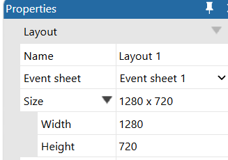
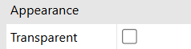
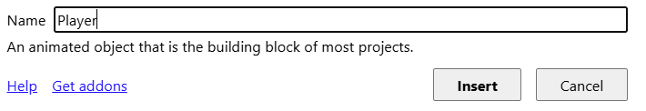
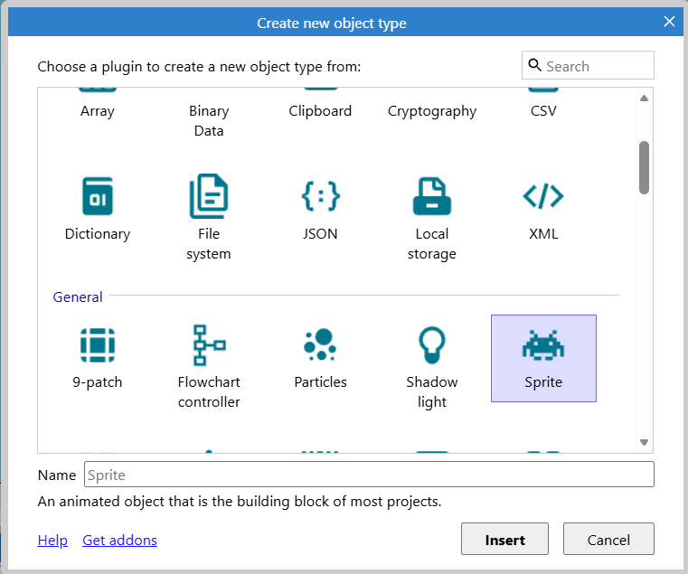

Jump and Fall: a Platformer in Construct 3
Draw a character and a platform right inside Construct 3, then make the character run, jump, land on platforms and fall off the edges.
What you will build
A character that runs left and right with the arrow keys and jumps with the Up arrow. It stands on platforms, and if it walks off the edge it falls. If it falls off the bottom of the screen, it goes back to the start.
| Tool | What it is for | Link |
|---|---|---|
| Construct 3 | Drawing the sprites and building the game | editor.construct.net |
- Construct 3 runs in the browser. Nothing needs installing.
- You draw the character and the platform inside Construct 3 (Part 2), so there are no image files to download or upload.
- The game uses 1 event (3 with the extra in Part 5), so it fits easily in the free version of Construct 3.
- Time: about one class period.
- Click a part to open it. Opening one part closes the others. Tick every checkpoint box before you move on; your ticks are remembered on this computer.
Lesson brief
If you already know Construct 3, follow the chart and you can finish from it alone. Click any box to jump to its full steps; the Back to the brief button brings you back here.
Part 1 · Start the project
Name Platformer · Viewport 1280 × 720
Layer 0: Transparent off
Background color 135, 206, 235
Part 2 · Add the objects
Pencil · feet on bottom row
Position 160, 500 · Size 64 × 64
160, 620 · 480, 540 · 800, 460 · 1120, 380
B: drag in ground, log, block PNGs
Size × 4 · see the Option B table
Part 3 · Run, jump and land
Jump strength 650 · Gravity 1500
Preview: falls through everything
Preview: lands and stays put
Walk off an edge: falls
Part 4 · Back to the start
→ Set position 160, 500
→ Platform Set vector Y 0
Part 5 · Extra: face the way you walk
Right is down → Set not mirrored
Each colour is one part. Codes like 2B mean Part 2, section B. Underlined words are links.
Part 1 · Start the project
The game area is 1280 × 720 with a sky-blue background.
| Where things are in Construct 3 | Location on screen |
|---|---|
| Properties Bar | Left side panel |
| Project Bar | Top-right panel |
| Layers Bar | Bottom-right panel |
| Layout 1 and Event sheet 1 tabs | Along the top of the middle area |
| Preview (▶ play button) | Main toolbar, top of the window |
If a bar is missing, open Menu → View and tick it.
1A · New project
| New project | Value |
|---|---|
| Name | Platformer |
| Viewport size | 1280 × 720 |
- Go to editor.construct.net and log in if you have an account.
- Click New project, type Platformer in Name, and 1280 and 720 in Viewport size. Click Create.
- An empty layout opens with a dotted rectangle on it: that is what the player will see.
1B · Layout size and sky
| Properties | Field | Value |
|---|---|---|
| Layout 1 | Size | 1280 × 720 |
| Layer 0 | Initially visible | On (leave it) |
| Transparent | Off (already off to start) | |
| Background color | Red 135, Green 206, Blue 235 |
- In the Project Bar (top-right panel), open Platformer → Layouts and click Layout 1.
 In the Properties Bar (left side panel), find Size and click the small ▶ (play) arrow beside it. It opens into two boxes, Width and Height. Type 1280 and 720. The arrow now points down, and the Properties Bar should look like this:
In the Properties Bar (left side panel), find Size and click the small ▶ (play) arrow beside it. It opens into two boxes, Width and Height. Type 1280 and 720. The arrow now points down, and the Properties Bar should look like this:
The layout edge lines up with the dotted rectangle. - In the Layers Bar (bottom-right panel), click Layer 0.
 Its settings appear in the Properties Bar (left side panel). Under Appearance, check that Transparent is unticked. It is unticked to start, so you usually only need to look.
Its settings appear in the Properties Bar (left side panel). Under Appearance, check that Transparent is unticked. It is unticked to start, so you usually only need to look.
Leave Initially visible ticked. - Click Background color (left side panel, under Layer 0) and type 135, 206, 235 for Red, Green and Blue. The layout turns sky blue, and the Properties Bar shows:

Part 2 · Add the objects
Place every object by typing its numbers into the Properties Bar. If something gets nudged, press Ctrl+Z or type the numbers back in.
| Object | Position X | Position Y | Size W | Size H |
|---|---|---|---|---|
| Player | 160 | 500 | 64 | 64 |
| Platform 1 | 160 | 620 | 256 | 64 |
| Platform 2 | 480 | 540 | 256 | 64 |
| Platform 3 | 800 | 460 | 256 | 64 |
| Platform 4 | 1120 | 380 | 256 | 64 |
2A · Draw the player
| Animations Editor | Value |
|---|---|
| Image size (Resize) | 32 × 32 |
| Tool | Pencil |
| Zoom | About 800% (so each pixel is easy to see) |
- On the Layout 1 tab, double-click inside the layout (or right-click it and choose Insert new object).
- The Create new object type window opens. Click Sprite (under General; scroll down, or type Sprite in the Search box at the top-right). Type Player in Name at the bottom.

Click Insert, then click on the layout.
The Animations Editor opens over the middle of the screen. - Click Resize in the editor's top toolbar (the icon with two diagonal arrows). Type 32 for Width and 32 for Height and click OK. The bottom bar now reads Size: 32x32.
- Click the Zoom in magnifier a few times until the small square fills the middle of the editor.
- Pick a colour in the Color palette (left side of the editor), or type numbers into Red, Green and Blue.
- Choose the Pencil tool and draw your character: a body, a head and two feet. The Eraser fixes mistakes.
- Make sure the feet touch the bottom row. If there are empty rows under the feet, the character will look like it floats above the platform.
- Close the Animations Editor with the X in its top-right corner. Your drawing is now on the layout.
- Type the Player's Position and Size from the table into the Properties Bar (left side panel). If Position or Size shows as one line, click the small ▶ arrow beside it to open the X and Y (or Width and Height) boxes. The character sits near the left side, above where the first platform will go.
2B · Platforms: draw one, or use your Piskel platforms
Choose one way to make the platforms:
- Option A · Draw it here: draw one plain platform in Construct and place four copies. Follow the steps right below.
- Option B · Use your Piskel platforms: if you finished Piskel Lesson 0: Three Platforms, bring in your ground, block and log. Skip down to Option B.
Option A · Draw the platform and place four
| Animations Editor | Value |
|---|---|
| Image size (Resize) | 64 × 16 |
| Dirt colour (Red, Green, Blue) | 139, 90, 43 |
| Grass colour (Red, Green, Blue) | 76, 175, 80 |
- Insert a new Sprite called Platform the same way. The Animations Editor opens.
- Click Resize and set Width 64, Height 16. The bottom bar reads Size: 64x16. Zoom in until the strip is easy to see.
- Type 139, 90, 43 into Red, Green and Blue, choose the Fill tool (the paint bucket), and click inside the strip. It turns brown.
- Type 76, 175, 80. With the Rectangle tool, drag from the top-left corner across to the right edge, 4 rows down. If it only draws an outline, click inside it with Fill. The top 4 rows are now green, like grass on dirt.
- Close the Animations Editor with the X.
- Type Platform 1's Position and Size into the Properties Bar (left side panel). A wide grass strip appears under the character.
- In the Project Bar (top-right panel), find Platform under Object types and drag it onto the layout. A second platform appears. Type Platform 2's numbers.
- Drag in two more and type the numbers for Platform 3 and Platform 4. The four platforms step up like stairs from left to right, with gaps between them.
Option B · Use your Piskel platforms
You need ground.png, block.png and log.png from the Piskel lesson, in your Downloads folder.
| Object | Position X | Position Y | Size W | Size H |
|---|---|---|---|---|
| ground (first) | 160 | 620 | 256 | 64 |
| log | 480 | 540 | 192 | 64 |
| block | 700 | 460 | 64 | 64 |
| ground (second) | 960 | 380 | 256 | 64 |
Each size is 4 times the Piskel size, the same way the 32-pixel player is shown at 64.
- Open your Downloads folder beside Construct. Drag ground.png straight onto the layout. It becomes a sprite called ground, listed under Object types in the Project Bar (top-right panel). It looks tiny at first.
- Type the first ground's Position and Size from the table into the Properties Bar (left side panel). It grows into a wide grassy strip under the character.
- Drag in log.png and block.png the same way, and type their numbers from the table.
- For the last step, drag ground from Object types in the Project Bar onto the layout (not ground.png again), and type the second ground's numbers. The four platforms now step up like stairs from left to right.
2C · Sharp pixels
| Project properties | Value |
|---|---|
| Sampling | Nearest |
- Zoom in on the character (hold Ctrl and scroll). The edges look soft, because the 32-pixel drawing is stretched to 64.
- Click the project name Platformer at the top of the Project Bar (top-right panel) and set Sampling (left side panel) to Nearest. The edges turn sharp and blocky.
Part 3 · Run, jump and land
Two behaviours do almost all the work. Platform gives the character running, jumping and gravity. Solid makes the platforms something to stand on.
How to add a behaviour: click the object on the layout, find Behaviors in the Properties Bar, and click the Behaviors link. Click Add new behavior, pick the behaviour, and click Add. Close the window. Its settings now show in the Properties Bar.
3A · Player: Platform behaviour
| Platform | Value |
|---|---|
| Max speed | 330 |
| Acceleration | 1500 |
| Deceleration | 1500 |
| Jump strength | 650 |
| Gravity | 1500 |
| Max fall speed | 1000 |
| Double-jump | Off |
| Jump sustain | 0 |
| Default controls | On |
| Enabled | On |
These are Construct's starting values, so you only need to check them.
- Click the character and add the Platform behaviour (under Movements). Check the values against the table.
- Click Preview (the play button at the top). (Shortcut: F5)
- The character drops straight through the platform and off the bottom of the screen. Gravity works, but there is nothing solid to stand on yet. Close the preview tab.
3B · Platform: Solid behaviour
- Option A: click any platform and add the Solid behaviour (under Attributes). All four get it, because they are the same object.
Option B: add Solid to the ground, then to the log, then to the block. Each object type needs its own; both grounds get it together. - Preview. The character falls, lands on the first platform, and stays put.
3C · Test the controls
| Key | What it does |
|---|---|
| ← Left arrow | Run left |
| → Right arrow | Run right |
| ↑ Up arrow | Jump |
- Preview and click inside the game once so it has the keyboard.
- Run right and jump up onto each platform in turn.
- Walk off the edge of a platform. The character falls. If it falls past the bottom of the screen, it is gone for good. Part 4 fixes that.
Part 4 · Back to the start
One event puts the character back on the first platform when it falls off the bottom of the screen.
| Event | Condition (left side) | Actions (right side) |
|---|---|---|
| 1 | Player → Compare Y → Greater than → 800 | Player → Set position → 160, 500 Player → Platform → Set vector Y → 0 |
In words: if the character is below the bottom of the screen (the screen is 720 tall), move it back to the start and stop its fall speed.
- Click the Event sheet 1 tab (along the top of the middle area, beside Layout 1).
- Click Add event → double-click Player → double-click Compare Y. Choose Greater than, type 800, click Done. The condition appears on the left.
- On the same row, click the faint grey Add action text in the middle of the row (it looks greyed out, but it works). Double-click Player → Set position. Type 160 and 500, click Done.
- Click the grey Add action under that action → Player → Set vector Y (in the Platform group). Type 0, click Done. The event now has two actions.
- Preview and walk off a platform into a gap. The character falls off the screen, then drops back onto the first platform.
Part 5 · Extra: face the way you walk
Right now the character always faces the same way. Two events flip it to face the direction it is running. This part is optional.
5A · Keyboard object
- Go to the Layout 1 tab, double-click the layout, choose Keyboard, and click Insert.
5B · Events 2 and 3
| Event | Condition | Action |
|---|---|---|
| 2 | Keyboard → Key is down → Left arrow | Player → Set mirrored → Mirrored |
| 3 | Keyboard → Key is down → Right arrow | Player → Set mirrored → Not mirrored |
- On the event sheet, click Add event at the bottom of the sheet → Keyboard → Key is down. Click the key box, press the Left arrow, and click Done.
- Grey Add action → Player → Set mirrored → Mirrored → Done.
- Make event 3 the same way with the Right arrow and Not mirrored.
- Preview. Run left and the character turns to face left; run right and it turns back.
Save your work
- Logged in: the first time, Menu → Project → Save as → Cloud save. After that, the Save button (disk icon) saves to the same place. (Shortcut: Ctrl+S)
- Guest: Menu → Project → Save as → Download a copy before you close the tab.
- To hand in: Menu → Project → Save as → Download a copy and upload the .c3p file to Google Classroom (classroom.google.com).